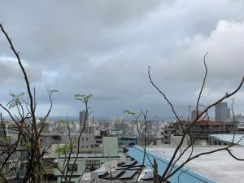

うるがいの話 ある日
最新: 喜怒哀楽
うるがいとは 前提知識です
カニの画像をクリックすると『うるがいの話』サイトを表示します
うるがい(ｳﾙｶﾞｲ urugai)とは、『もずくがに』の名前でとても大きくなります。
たながー（ﾀﾅｶﾞｰtanagaa）とは手長えびのことで、何種類かあり大きいのは車 エビぐらいになります。
ぶながー(bunagaa)とは、赤い髪の毛、赤い身体、そして身長は１ｍ２０ｃｍ ぐらい、川の蟹を食べているの目撃された。場所は沖縄県国頭郡大宜味村のと ある村僕の隣近所に住んでいる爺さんから、聞いた話です。
2021年07月28日 (水）
喜怒哀楽
18:21

オリンピックとみて、ドラマを見て喜怒哀楽する。嫌いな国、中国（正しくは
中国共産党）、アナザーストーリーズ「香港返還 すべてはあの日から始まっ
た」、土曜ドラマ「大地の子」。いろいろ書こうと思ったが、面倒くさいので
止める。昨日子供が家に来て、傷病手当金の手続きが粛々と進めらているのを
聞いてホットする。総務系の事務は、大本の東京の大きな会社で一括して行っ
ているので大丈夫だろう。心療内科の先生（人気が無い病院らしい、だからこ
こで診療してもらっている、不愛想で怖そうな先生としつこく言う）かれも了
解を得ている。傷病手当金の話を持ち出された時、当初は何を辞めるこの直前
に！と思ったが、私も子供もネット等で調べたらその方がいいと判断、素直に
提案を受け入れる。子供は、規則正しい生活をしていて（仕事はしていないが
）逆になんか変な感じと、会社のメールをみる（まだ、支給されているパソコ
ンがある）と皆、夜１０時まで仕事をしている、派遣の人も、と言っていた。